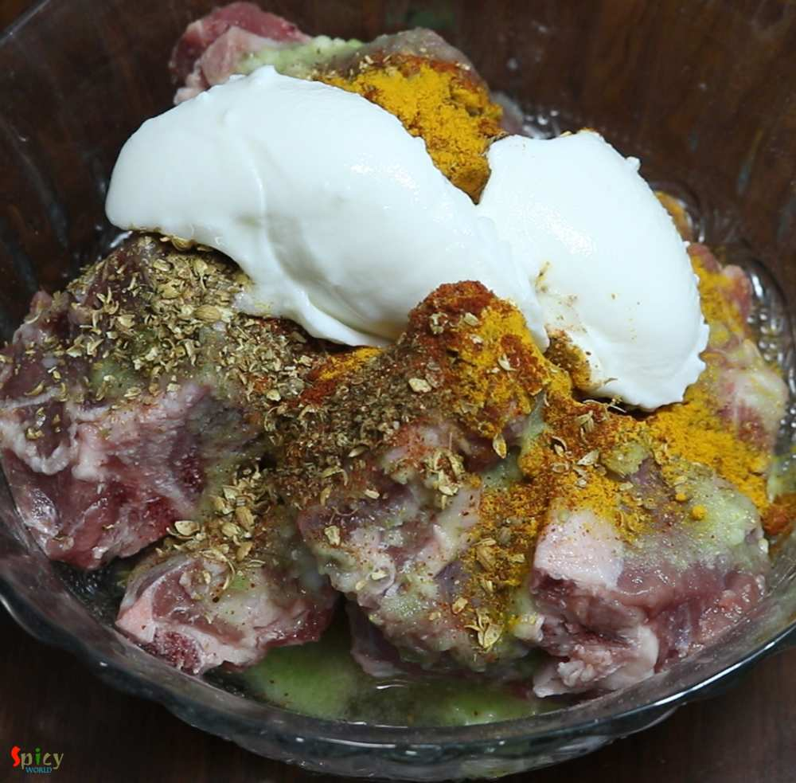
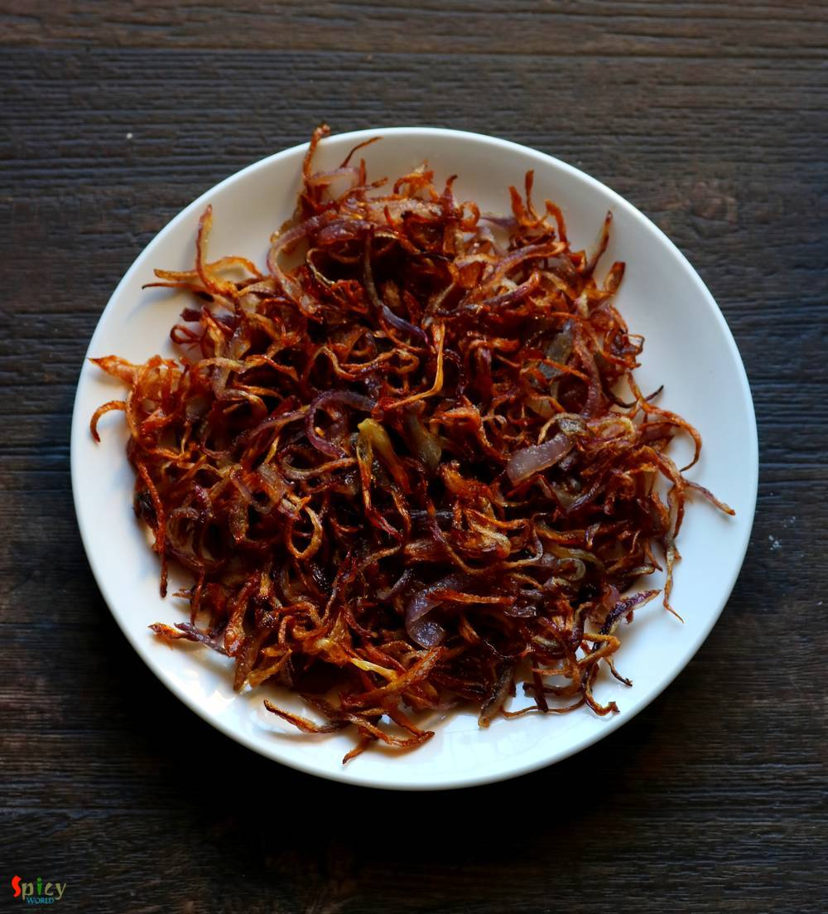
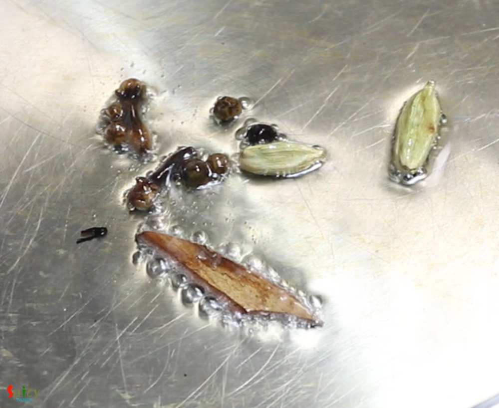
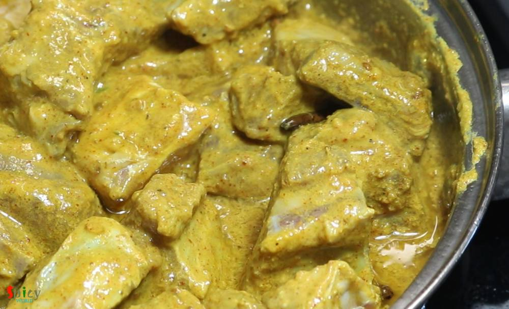
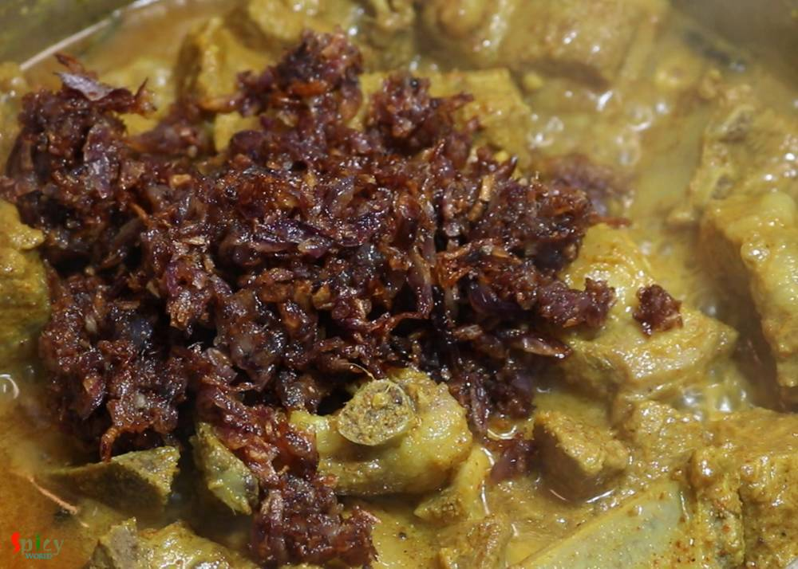
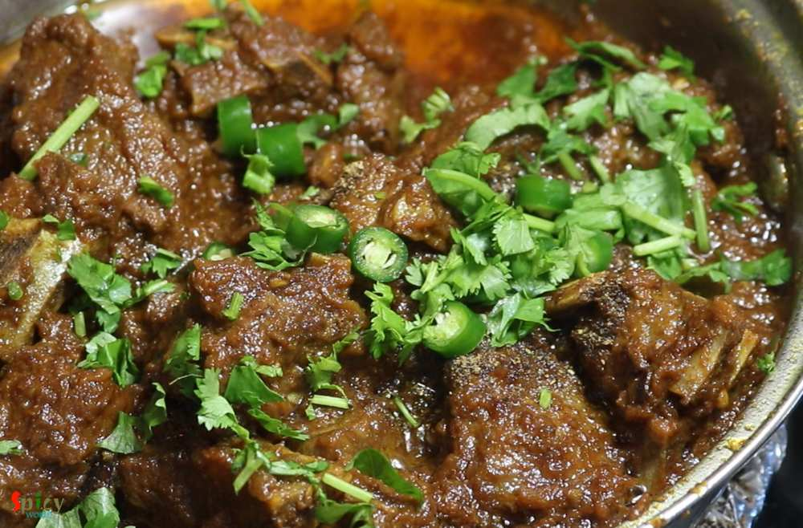
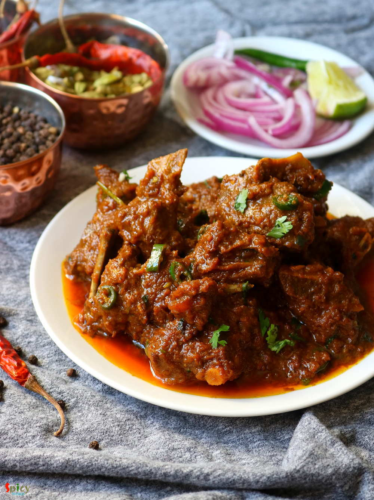

Simple and Easy Recipes
Mutton Korma
© 2016 Spicy World, Published on: Feb 14, 2019
Mutton korma is an old school and popular non veg main course item from Old Delhi. Any korma recipe has onion and yogurt based sauce, some even add nut paste also. Last weekend I had a party in my house. Among all the foods, the main attraction was Mutton Korma. Korma is very rich itself. Always serve this with light rice item or naan. Do give it a try and let me know how it turned out for you.

Ingredients
- 500 grams of mutton.
- 2 small onion, thinly sliced.
- 3 Tablespoons of yogurt.
- 2 Tablespoons of ginger garlic paste.
- Spice powder 1 Teaspoon each of (turmeric powder, red chili powder, roasted cumin & coriander powder, kashmiri chili powder).
- 5 Tablespoons of cooking oil.
- Whole spices (2 green cardamom, 2 cloves, 4 black peppercorns, 1 very small cinnamon stick).
- Salt as per your taste.
- 2 cups of hot water.
- Half Teaspoon of garam masala powder.
- 2-3 drops of kewra water.
- Some chopped green chilies and coriander leaves.


Steps
Marinate the mutton with ginger garlic paste, spice powder and yogurt. Mix well and keep it aside for 4-5 hours.
In the meantime, fry the thin onion slices in 1 cup of hot oil until they become golden brown in color. Do not make dark in color and fry them in batches.
Heat 4-5 Tablespoons of oil in a pan. Saute the whole spices for few seconds.
Add the marinated mutton, fry on medium flame for 10 minutes.
Add salt as per your taste, mix well.
Now put the fried onion in a grinder, grind them to a coarse powder. You can do this with your hand also.
Then add the ground fried onion into the mutton, mix well and cook for 15 minutes on medium flame.
Add 2 cups of water, mix well, cover the pan and cook until the mutton becomes fully soft.
Lastly add garam masala powder, kewra water, chopped green chilies and coriander leaves.
Mix well and turn off the heat. Let it rest for 30 minutes then serve.
Your Mutton Korma is ready to serve.
Serve this hot with rice, naan or paratha ...
")